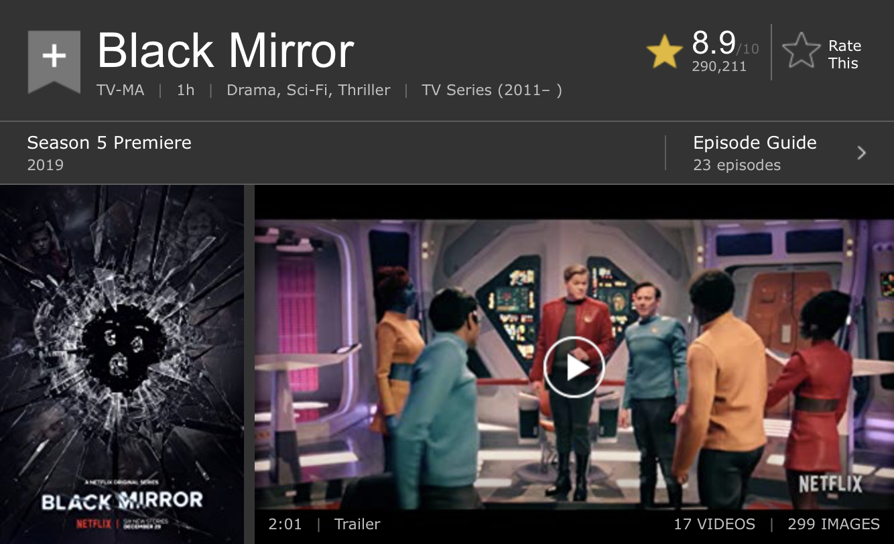
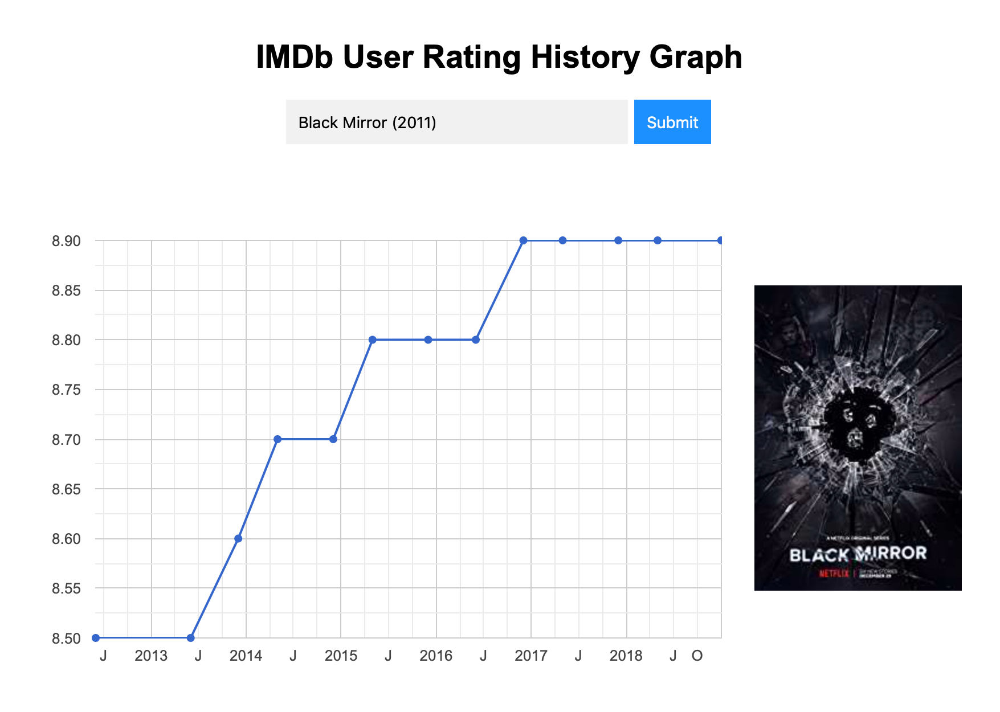

The Decline of Audience Rating
Black Mirror is listed as the 30th top rated TV Shows on IMDb now, with an impressive audience rating of 8.9 out of 10*. However, the audience ratings by season available on Rotten Tomatoes show a clear decline from 97% for the first season to 84% for the fourth season. Extremely high expectation from the audience probably is one of the reason why the ratings are in such trends. The release of Season 1 of Black Mirror might have set the bar too high for any of the following seasons to overcome that and win the audience's heart.
* Time of record: Feb 14 2019.
The Myterious Rise
The image above shows the data presented on the IMDb User Rating History Graph website designed by yathish1618*, a clear rising trend in the audience rating of Black Mirror is shown. From 8.5 to 8.9, the audience rating increased 4.5% in almost 4 years. This trend is the exact opposite of which shown on Rotten Tomatoes. Surprise? Mysterious? Who knows.